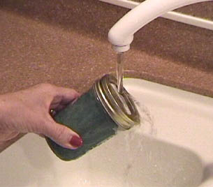

Thermal Expansion: How to Loosen a Jar Lid

|
During thermal expansion, every linear
dimension
increases by
the same
percentage with an increase
in temperature, including holes.
This assumes
that the
expanding
material is
uniform. Applied to a metal jar lid, this implies that the inside diameter of the lid will increase, tending to loosen the lid. Directing the stream of hot water at the center of the lid heats the metal more than the glass, so that you get a greater difference in the expansion of the top and the jar. The thermal conductivity of the metal top is much greater than that of the glass, and its specific heat is relatively low, so the temperature of the entire metal lid rises rapidly.
Even if you heated the metal lid and the glass jar equally, you would loosen the lid a bit because the thermal expansion coefficient of the metal is greater than that of the glass.
|
If you examine the table of thermal expansion coefficients, you will find that the expansion of a steel top is only about 40% greater than that of the glass, so it is helpful if you can heat the metal more than the glass. The fact that the thermal conductivity of the steel is over 60 times that of glass aids you in raising its temperature more than that of the glass.
The amount of actual expansion is quite small since the coefficients of expansion are very small. If the 7 cm diameter lid were heated from 20°C to 60°C, the amount of expansion is only
DL = (7 cm)(13 x 10-6)(40°C) = 0.0036 cm
Fortunately, even this small amount of expansion is sometimes sufficient to enable you to remove a stubborn lid.
|
Index
Expansion concepts |